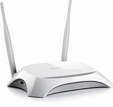

Nama Alat: Router
Fungsi:
- Mentransmisikan Informasi Router ini sebagai jembatan untuk akses jaringan internet dengan menggunakan sistem kerja networking bridge sehingga data dari yang bersumber dari suatu jaringan dapat digunakan oleh jaringan lainnya.
- Menghubungkan Jaringan ke DSL Fungsi dari router yang selanjutnya yaitu untuk dapat menghubungkan jaringan ke DSL atau Digital Subscriber Line.
- Membaca Alamat IP Fungsi dari router yang selanjutnya yaitu untuk membaca alamat IP. Pembacaan alamat IP ini nantinya dapat menentukan bagaimana routing dari satu node ke node yang lainnya dalam suatu jaringan.
- Menghubungkan Jaringan Fungsi dari router yang selanjutnya yaitu untuk menghubungkan jaringan yang jadi salah satu fungsi utama dari router. Router ini digunakan untuk menghubungkan beberapa perangkat sehingga bisa tersedia pembagian paket data yang terjadi antar jaringannya.
Jenis router : Wireless, Virtual Router, Wired, Edge Router.